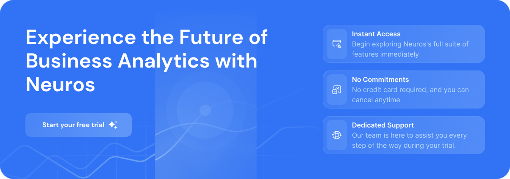

AI-Driven Forecasts
Spot future shifts earlier with predictive analytics built for fast decisions.
Harnesses the power of artificial intelligence to transform your business data into actionable insights, propelling you to new heights of success
Watch introduce video
5 mins · Play video
160,000+ customers in over 120 countries grow their businesses with Neuros
Specify helps you gain control of your design system across teams and products.
Spot future shifts earlier with predictive analytics built for fast decisions.
Bring team data together and keep every workflow clear from one place.
Turn complex signals into useful summaries your team can act on quickly.
At Neuros, we pride ourselves on delivering top-notch AI-driven business analytics. But don't just take our word for it. Hear what our satisfied users have to say.

Advanced business intelligence tools enhance efficiency across your entire operation. By predicting future revenue and dissecting marketing effectiveness, these tools provide you with the critical insights needed for informed decision-making.

Harness Neuros’s advanced AI algorithms to anticipate market shifts, forecast trends, and make data-driven decisions...
Finance, Retail, E-commerce
Integrate Neuros with your existing tools and platforms for a unified analytics experience. From CRMs to ERPs, we...
Tech, Healthcare, Manufacturing
Craft bespoke dashboards that resonate with your brand’s goals. With drag-and-drop functionalities, visualizing your dat...
Marketing, Sales, Operations
With Neuros’s real-time data processing, you’re always in the know. Make decisions based on the latest data and...
E-commerce, Logistics, Supply ChainRest easy knowing your data is protected with Neuros’s top-tier security protocols. From encryption to access controls, we...
Finance, Healthcare, LegalWork together seamlessly with Neuros’s collaborative features. Share insights, annotate charts, and drive collective gr...
Design, Development, Project ManagementNeuros offers an intuitive interface that’s easy to navigate, ensuring you spend less time figuring things out and more ti...
All IndustriesReceive automated insights and recommendations tailored to your business needs. Let Neuros’s AI guide y...
Retail, Marketing, Sales
Whether you’re a startup or an enterprise, Neuros scales with you. Experience robust analytics solutions th...
Startups, SMEs, Enterprises